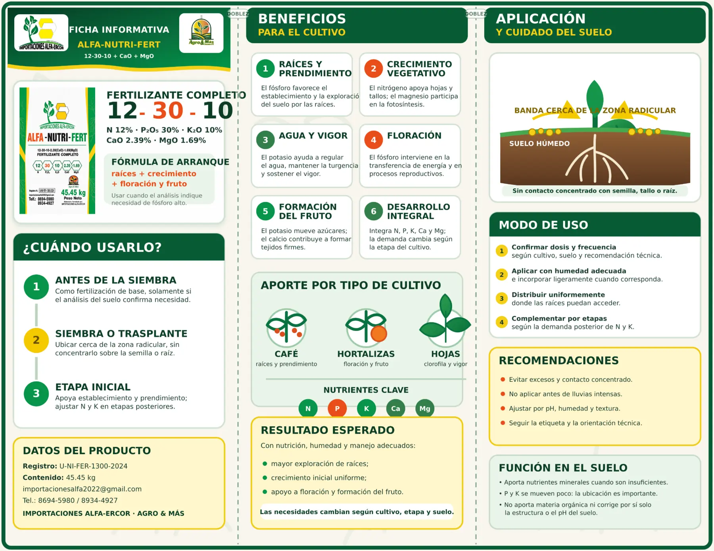
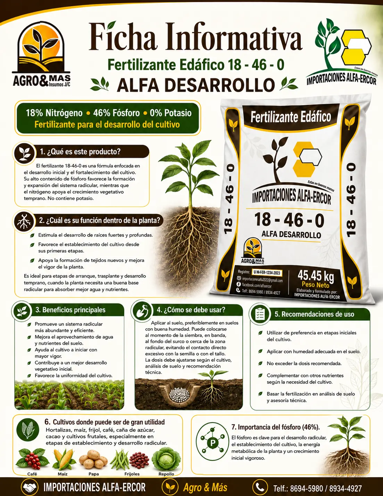
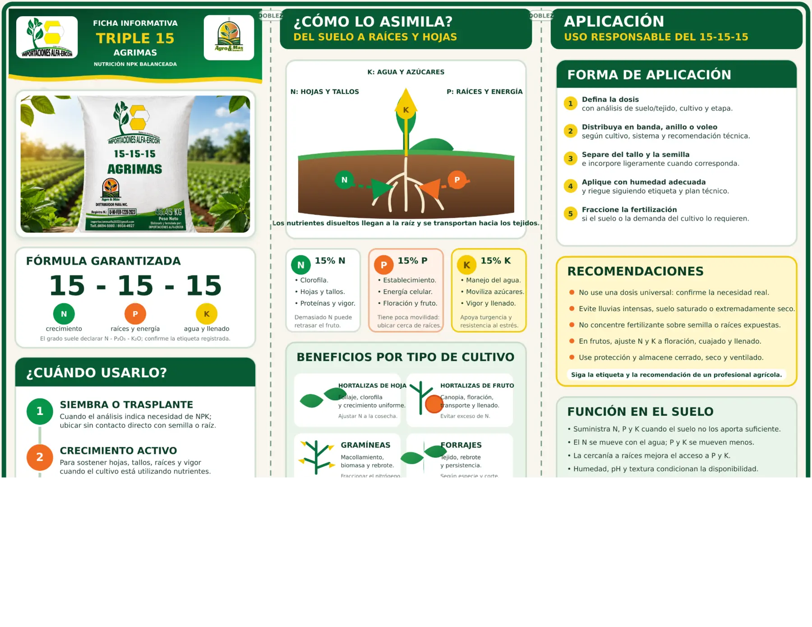

Garantizando tu producción.
Información técnica
ALFA-ERCOR · AGRO & MÁS
⌂ Inicio
Quiénes somos
Productos
Servicios
Fichas
Contacto
Información ampliada
Fichas técnicas
Composición, beneficios, momentos de uso y recomendaciones.

ALFA-NUTRI-FERT
Consultar producto →

ALFA Desarrollo
Consultar producto →

Triple 15
Consultar producto →
☎

 ALFA-ERCOR · AGRO & MÁS
ALFA-ERCOR · AGRO & MÁS